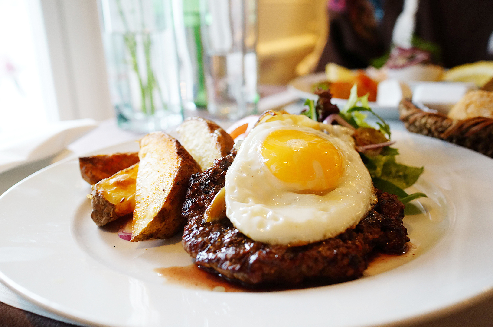

Horse Steak

This is NOT what you think it is i promise!
So we are not cooking a horse, dont worry! this is a delicious meat preparation that originates from colombia, why is it called like that? no idea!
The following list will give you the needed ingredients for this recipe:
- 1lb of red meat
- 1 spoonfull of cooking oil
- 1 cup of water
- 1 big round onion
- 2 tomatoes
- 4 eggs
that you've got your ingredients ready, lets get to cook!
- pre heat a pan and when its hot enough put oil and meat in there, then cooked to your prefered term
- dice the tomatoe and the onion, then add it to the same pan the meat is being cooked in until the onion is golden
- serve your meat with the onions and tomatoes on top
- fry your eggs and put it on top of the meat along the onions and tomatoes
- you're done!